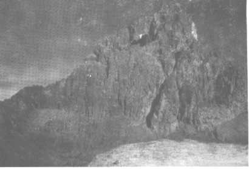

HIS majestic mountain stands quite alone, almost dead on the equator, rising from the Kenya highlands to a height of 17,040 feet. It consists to-day of a forest belt, an alpine zone, glaciers and the central peak. I am indebted to Professor J. W. Gregory�s article in Major E. A. T. Dutton�s excellent book, "Kenya Mountain ", for the following facts concerning the mountain�s geology. The mountain is the ruined stump of: an ancient volcano which, when in eruption, was many thousands of feet higher than at present. The centre peak which is the dominating feature of the mountain consists of rock which solidified in the throat of the volcano when the volcanic forces waned; it consolidated as a plug of hard rock which sealed up the outlet like a cork in a bottle. This plug has now been left as the summit of the mountain, owing to the wearing away of the softer volcanic tuffs which formed the walls of the crater and of the pipe. The mountain is therefore a volcano in an advanced state of decay, and is extremely old, the crater having been both formed and destroyed before the final upheaval of the Alps.
When Professor Gregory visited the mountain in 1893, the rock of which it is composed had not been found elsewhere and so he called it Kenyte. This rock is a lava containing more alkali that most igneous rocks and much of the mineral olivine. It has since been discovered in Antarctica.
Though Ptolemy is supposed to have included Mount Kenya in his snow-clad mountains which form the source of the White Nile, we must give the credit for its discovery in modern times to a German missionary, Dr. Lewis Krapf. On December 3rd, 1849, Dr. Krapf was taken by some natives to a vantage point some ninety miles away, whence he saw Kenya for the first time. He records that: " It appeared to be like a gigantic wall on whose summit I observed two immense towers, or horns as you may call them. These horns or towers, which are at a short distance from each other, give the mountain a grand and majestic appearance, which raised in my mind overwhelming feelings."
This majestic goddess reared her head for some fifty years more unapproached by man, until in 1899, on September 13th, Sir Halford MacKinder and his two Swiss guides reached the summit. MacKinder�s whole party consisted of himself, his partner in the expedition, two Swiss guides from Courmayeur and two collectors. At Zanzibar he enlisted 59 native porters, and at Nairobi a further 98 natives. After many vicissitudes of travel they reached the glaciers and pitched their camp, and, on the third attempt, the mountain yielded. On this and on the first attempt the party spent a night on the exposed and icy slabs. The final attempt was made up the South-east face on to the South Ar0te, but then instead of going up on to Nelion the party made a most difficult traverse and cut steps up the Darwin glacier and then up the most difficult obstacle of all, the Diamond glacier. As this was only a hundred feet wide, they calculated that it would take them twenty minutes: while in point of fact it took them three hours, but they were rewarded by reaching the summit of Batian, which proved to be the highest peak.
Thirty years elapsed before the second ascent was made, by three expert mountaineers, E. E. Shipton, P. Wyn Harris and G. A. Sommerfelt. Shipton and Wyn Harris reached the summit on January 15th, 1929. They at first attempted the North face, but 400 feet from the summit they came up against "a smooth wall, quite vertical and in places overhanging ", which they could not pass. " The rock scenery was some of the finest I have ever seen ", writes Shipton. However, the South- east face yielded, and Shipton modestly describes the most difficult pitch as "a traverse along an exposed ledge and up a rickety crack � a run-out of 60 feet ". Of the peak itself he says: "The climbing on the peak compares favourably with any of the greater peaks in the Alps. The difficulty of the climbing on our route is similar to that of the Meije in the Dauphiné, though it is rather shorter. I have never seen on any mountain, with the exception perhaps of Mont Blanc, such a variety of ridges and faces as on the peaks of Mount Kenya ".
Up to 1942 only some six parties, including one woman, had reached the summit; but the war brought many mountaineers to East Africa who made the most of their opportunities. Ten days leave enabled the writer to join with four others in an attempt on the summit, and although this was not achieved by some 300 feet, it was an unforgettable experience, The party consisted of Oswald Wigram, as leader, Daphne Wingfield-Digby, Gordon Harvey, Charles Haddow, the writer and fifteen porters.
A three-quarter ton truck transported us and the rations for ourselves and the porters the 130 miles odd from Nairobi to Trinau, where we made our base at the farm of hospitable Mr. and Mrs. W. Powys. Two stops were made on the way, one to buy rations and blankets for the porters, a lengthy process as they did the shopping themselves, and the other to take a cup of tea and final advice about the mountain from P. Wyn Harris, now a district Commissioner at Nyevi.
The party finally set off at 11.30 on Saturday, February 7th. Fifteen porters may seem a large number for five climbers, but they had to carry all the equipment, tents, sleeping bags, cooking utensils and food for eight days, By no means the lightest portion of their load was their own food. On such an expedition it is always a fine point to decide the number of porters to carry the necessary impedimenta, and the further number required to carry food for the first lot, and so on. Their normal food is posho, a meal made from the mealie, but meat is dear to their heart and the proudest member of their party was one who carried the dissected carcase of a sheep, the generous gift of Mr. Powys. His load grew quickly lighter, but nevertheless on the second and third days in the hot sun it was advisable to keep upwind of him.
The first day�s going was very pleasant, over moorland in bright sunshine, starting about 9,000 feet up. Camp was pitched at about 5 p.m. at the Marania river. Throughout the day we were regaled by magnificent views of the distant peak, on which there appeared to have been a heavy snowfall. By approaching from the North-west we avoided the forest belt which almost encircles the mountain. On Sunday the moorland gradually gave way to tussocky grass which made extremely hard going. The weather was perfect and the distant views magnificent. It was difficult to imagine that the snow-clad peak ahead of us rose to 17,000 feet. At lunchtime we were able to have a bathe in an ice-cold river, soon compensated for by the warm sun. Camp was pitched that night by the Gathita river, at about 12,000 feet. Gone were the warm nights, and we awoke to find all that had been running water frozen solid. At this altitude it regularly freezes solid at night and thaws completely in the daytime. The porters, who had come from a hundred miles away, were thrilled, and were very keen to take some ice home to their friends!
Early next morning we climbed the ridge which looks down into the Hinde valley, which runs north-east from the main peak. We had a grand view of Point Lenana (16,300 feet), Point Thomson and the main peak itself, scarcely showing its twin peaks at this angle. It seemed to tower above us, and to have come suddenly within our reach overnight. Giant Groundsel, (Senecio Kenyense), and Giant Lobelias, (Lobelia Telekii), were the only vegetation in the valley below, and on a shelf at about 14,800 feet vegetation ceased altogether. Here we pitched our most advanced camp, as there was water and fuel available. A snowfall in the afternoon had made our porters pitch a tent and light a fire, and we had to go back a long way to fetch them. Fortunately sunshine followed, or else we might never have got them to move. As soon as we had pitched camp it came on to snow heavily. Two brave members of the party went outside to dig a trench round the hut. Daphne worked wonders with the primus inside our tent, and produced hot cocoa from the midst of a pile of rucksacks and boots, while outside, Charles defied snowBakes and sopping wood and managed to warm a good brew of M. &. V. The thermometer registered 22� of frost that night.
Tuesday was declared a Sunday or day of rest. After prayers taken by Oswald four of us set out to explore. Gordon had been nursing �flu all the time and so stayed in camp. We ended by climbing Point Lenana (16,300 ft.), a straightforward climb over snow on to the summit. On the way down we encountered an electric storm which charged our ice-axes, and sent a stream of sparks across the gap between a metal band in my helmet and my head. Rather a pleasant sensation.
 Main Peak S.E. Face On Wednesday we moved to the club hut on the Lewis glacier at 16,000 ft. The porters carried our food, bedding and fuel, and went back to sleep at the camp in the Hinde valley. Another party under the leadership of Alan Ker was already in occupation of the hut, so three of us slept in a tent. The move involved hard going over bad scree. We said goodbye to vegetation and the grim though majestic North face, which had defeated. Shipton and his party, to exchange then for real Alpine conditions � a glacier on our doorstep and the superb South-east face of the peak towering invitingly for a thousand feet sheer above the glacier. This was our goal for the morrow. The afternoon was spent in exploring the glacier and surrounding eminences, and gasping at the view. Such scenery entirely new to me and to some of the others.
By 7.15 the next morning, just as it got light, Alan Ker, Oswald Wigram, a native called Mutu Muthara and myself crossed the glacier to the� foot of the peak, and started our climb. Climbing on two ropes, we made steady progress, giving ourselves time to look at the scenery. At one point the snow-clad dome of Kilimanjaro (19,455 ft.), 200 miles away to the South, stood out glistening pinkish in the early morning sun, above a white sea of cloud: truly the heavens declared to us the glory of God in his handywork. As far as we could we followed Shipton�s route. The climbing was most interesting the whole way, especially the boulder in the chimney. The arête was reached at 10.30, giving us a grand view into the " works ", where the Diamond and Darwin glaciers flow out to the South-west from the Gate of the Mists between the two peaks Batian (17,400 ft.) and Nelion (17,000 ft.). By 11.30 we reached the gendarme. The clouds were breaking up and gathering round us, swirling round Point St. John and Budget Peak below us, making them appear like phantom peaks. Above the gendarme, only three or four hundred feet from the summit,. we came to Shipton�s "rickety crack". It�s exposed position, the delay it caused us, the threatening weather, and the fact that two of us were married, made us dcecide to turn back. We turned at 11.45 p.m. As it happened, only a little snow fell, and we had an excellent descent. We appreciated a hot meal on our return, as we had only had porridge and coffee for breakfast, and oranges, chocolate and barley sugar while climbing.
The next day, Friday, the porters came and fetched our stuff, and four of us decided to return to our camp in the Hinde valley by continuing round the peak in a clockwise direction. This involved considerable up and down scrambling. In the morning we got grand views of Point St. John, the Darwin and Diamond glaciers, Nelion and Batian, and Point Piggott. At mid-day clouds and bitterly cold rain descended upon us, and we had to depend upon compass bearings. Late afternoon brought clear weather again and we found ourselves where we wanted to be, approaching the saddle at the head of the Gorges and MacKinder valleys, and were soon over the ridge into the Hinde valley where our camp was.
The next day we packed up and made the journey back to the farm, the chief excitement being the sight of a rhino at close quarters. Fortunately when he was disturbed he went off in the opposite direction. Despite the use of sunburn cream some faces and arms got well burnt, but Gordon�s �flu was quite cured, as was also a nasty boil on Oswald�s leg, and only one member of the party suffered from bad headaches at the higher altitudes. The climbing party were unaffected by the altitude.
Should anyone find themselves within reach of this magnificent mountain and require information about climbing, a note to the Secretary of the Mountain Club of East Africa. P.O. Box 281, Nairobi, will bring prompt and willing assistance. We are much indebted to the Secretary for his courtesy and information.